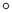

<!doctype html>
<html lang="en">
    <head>
        <meta charset="utf-8">
        <meta http-equiv="X-UA-Compatible" content="IE=edge">
        <!-- Mobile meta tags to go in head-->
        <meta name="HandheldFriendly" content="True">
        <meta name="viewport" content="width=device-width, initial-scale=1.0, maximum-scale=1.0, user-scalable=no" />
        <meta name="MobileOptimized" content="320"/>
        <meta name="apple-mobile-web-app-capable" content="yes">
        <meta http-equiv="cleartype" content="on">
        <meta name="mobile-web-app-capable" content="yes">
        <meta name="apple-mobile-web-app-capable" content="yes">
        <link rel="stylesheet" href="css/leaflet.css">
        <link rel="stylesheet" href="css/qgis2web.css"><link rel="stylesheet" href="css/fontawesome-all.min.css">
        <style>
        html, body, #map {
            width: 100%;
            height: 100%;
            padding: 0;
            margin: 0;
        }.leaflet-popup-content {
        min-width: 200px;
        min-height: 100px;
        overflow-y: scroll;
        }
        </style>
        <title></title>
    </head>
    <body>
        <div id="map">
        </div>
        <script src="js/qgis2web_expressions.js"></script>
        <script src="js/leaflet.js"></script>
        <script src="js/leaflet.rotatedMarker.js"></script>
        <script src="js/leaflet.pattern.js"></script>
        <script src="js/leaflet-hash.js"></script>
        <script src="js/Autolinker.min.js"></script>
        <script src="js/rbush.min.js"></script>
        <script src="js/labelgun.min.js"></script>
        <script src="js/labels.js"></script>
        <script src="data/Bahraim_DatePalms_1.js"></script>
        <script>
        var map = L.map('map', {
            zoomControl:true, maxZoom:28, minZoom:1
        })
        var hash = new L.Hash(map);
        map.attributionControl.setPrefix('<a href="https://github.com/tomchadwin/qgis2web" target="_blank">qgis2web</a> &middot; <a href="https://leafletjs.com" title="A JS library for interactive maps">Leaflet</a> &middot; <a href="https://qgis.org">QGIS</a>');
        var autolinker = new Autolinker({truncate: {length: 30, location: 'smart'}});
        var bounds_group = new L.featureGroup([]);
        function setBounds() {
            if (bounds_group.getLayers().length) {
                map.fitBounds(bounds_group.getBounds());
            }
            map.setMaxBounds(map.getBounds());
        }
        map.createPane('pane_WikimediaMap_0');
        map.getPane('pane_WikimediaMap_0').style.zIndex = 400;
        var layer_WikimediaMap_0 = L.tileLayer('https://maps.wikimedia.org/osm-intl/{z}/{x}/{y}.png', {
            pane: 'pane_WikimediaMap_0',
            opacity: 1.0,
            attribution: '',
            minZoom: 1,
            maxZoom: 28,
            minNativeZoom: 0,
            maxNativeZoom: 18
        });
        layer_WikimediaMap_0;
        map.addLayer(layer_WikimediaMap_0);
        function pop_Bahraim_DatePalms_1(feature, layer) {
            var popupContent = '<table>\
                    <tr>\
                        <td colspan="2"><strong>FILE</strong><br />' + (feature.properties['FILE'] !== null ? autolinker.link(feature.properties['FILE'].toLocaleString()) : '') + '</td>\
                    </tr>\
                    <tr>\
                        <td colspan="2"><strong>NAME</strong><br />' + (feature.properties['NAME'] !== null ? autolinker.link(feature.properties['NAME'].toLocaleString()) : '') + '</td>\
                    </tr>\
                    <tr>\
                        <td colspan="2"><strong>DATE_PALMS</strong><br />' + (feature.properties['DATE_PALMS'] !== null ? autolinker.link(feature.properties['DATE_PALMS'].toLocaleString()) : '') + '</td>\
                    </tr>\
                </table>';
            layer.bindPopup(popupContent, {maxHeight: 400});
        }

        function style_Bahraim_DatePalms_1_0(feature) {
            if (feature.properties['DATE_PALMS'] >= 300.000000 && feature.properties['DATE_PALMS'] <= 1400.000000 ) {
                return {
                pane: 'pane_Bahraim_DatePalms_1',
                radius: 4.0,
                opacity: 1,
                color: 'rgba(35,35,35,1.0)',
                dashArray: '',
                lineCap: 'butt',
                lineJoin: 'miter',
                weight: 1,
                fill: true,
                fillOpacity: 1,
                fillColor: 'rgba(247,252,245,1.0)',
                interactive: true,
            }
            }
            if (feature.properties['DATE_PALMS'] >= 1400.000000 && feature.properties['DATE_PALMS'] <= 2182.000000 ) {
                return {
                pane: 'pane_Bahraim_DatePalms_1',
                radius: 7.0,
                opacity: 1,
                color: 'rgba(35,35,35,1.0)',
                dashArray: '',
                lineCap: 'butt',
                lineJoin: 'miter',
                weight: 1,
                fill: true,
                fillOpacity: 1,
                fillColor: 'rgba(202,234,195,1.0)',
                interactive: true,
            }
            }
            if (feature.properties['DATE_PALMS'] >= 2182.000000 && feature.properties['DATE_PALMS'] <= 4600.000000 ) {
                return {
                pane: 'pane_Bahraim_DatePalms_1',
                radius: 12.0,
                opacity: 1,
                color: 'rgba(35,35,35,1.0)',
                dashArray: '',
                lineCap: 'butt',
                lineJoin: 'miter',
                weight: 1,
                fill: true,
                fillOpacity: 1,
                fillColor: 'rgba(123,200,124,1.0)',
                interactive: true,
            }
            }
            if (feature.properties['DATE_PALMS'] >= 4600.000000 && feature.properties['DATE_PALMS'] <= 8430.000000 ) {
                return {
                pane: 'pane_Bahraim_DatePalms_1',
                radius: 18.0,
                opacity: 1,
                color: 'rgba(35,35,35,1.0)',
                dashArray: '',
                lineCap: 'butt',
                lineJoin: 'miter',
                weight: 1,
                fill: true,
                fillOpacity: 1,
                fillColor: 'rgba(42,146,74,1.0)',
                interactive: true,
            }
            }
            if (feature.properties['DATE_PALMS'] >= 8430.000000 && feature.properties['DATE_PALMS'] <= 19000.000000 ) {
                return {
                pane: 'pane_Bahraim_DatePalms_1',
                radius: 28.0,
                opacity: 1,
                color: 'rgba(35,35,35,1.0)',
                dashArray: '',
                lineCap: 'butt',
                lineJoin: 'miter',
                weight: 1,
                fill: true,
                fillOpacity: 1,
                fillColor: 'rgba(0,68,27,1.0)',
                interactive: true,
            }
            }
        }
        map.createPane('pane_Bahraim_DatePalms_1');
        map.getPane('pane_Bahraim_DatePalms_1').style.zIndex = 401;
        map.getPane('pane_Bahraim_DatePalms_1').style['mix-blend-mode'] = 'normal';
        var layer_Bahraim_DatePalms_1 = new L.geoJson(json_Bahraim_DatePalms_1, {
            attribution: '',
            interactive: true,
            dataVar: 'json_Bahraim_DatePalms_1',
            layerName: 'layer_Bahraim_DatePalms_1',
            pane: 'pane_Bahraim_DatePalms_1',
            onEachFeature: pop_Bahraim_DatePalms_1,
            pointToLayer: function (feature, latlng) {
                var context = {
                    feature: feature,
                    variables: {}
                };
                return L.circleMarker(latlng, style_Bahraim_DatePalms_1_0(feature));
            },
        });
        bounds_group.addLayer(layer_Bahraim_DatePalms_1);
        map.addLayer(layer_Bahraim_DatePalms_1);
        var baseMaps = {};
        L.control.layers(baseMaps,{'Bahraim_DatePalms<br /><table><tr><td style="text-align: center;"></td><td>300 - 1400 </td></tr><tr><td style="text-align: center;"></td><td>1400 - 2182 </td></tr><tr><td style="text-align: center;"></td><td>2182 - 4600 </td></tr><tr><td style="text-align: center;"></td><td>4600 - 8430 </td></tr><tr><td style="text-align: center;"></td><td>8430 - 19000 </td></tr></table>': layer_Bahraim_DatePalms_1,"Wikimedia Map": layer_WikimediaMap_0,},{collapsed:false}).addTo(map);
        setBounds();
        </script>
    </body>
</html>
